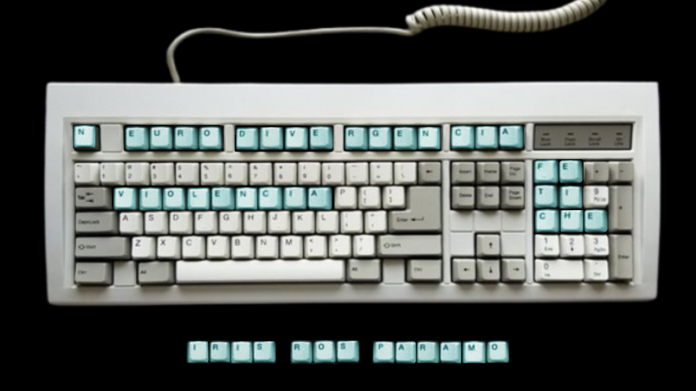

Iris Ros Páramo | Graduada en Lengua y Literaturas Hispánicas • Máster en Estética Contemporánea

Sobre neurodivergencia: "TEAtraviesa"
Sobre fetichismo de la mercancía: "¿Por qué Dios necesita un coche?"
❯